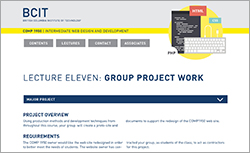
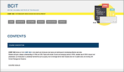

INTRODUCTION
Group Partners
BRUNA
Metasite
Ideas + Coding
I came up with ideas for our layout, and how to display all our needed content. Rationale page and example images to show the features that we came up with it and their usability to the website.
Protosite
The drop down navigation and content for pages. Following our layout.
Linking all pages with hyperlinks and making sure our page correponds with SEO parameters.
LEO
Metasite
Generated the site map using slickmap on github and filled in my parts in the introduction and rationale sections using the layout coded by Melanie.
Protosite
Coded a simple login feature that matches the design of the overall layout and constructed the quiz sections using the Accordion widget.
KATHY
Metasite
QA + Style
I validate the pages according to HTML5, ensuring all errors have been resolved.I also moved the folder structure to be more organized for editing.
I reorganized and modified the .CSS styles to resolve conflict among different pages. Modified tags to have all the pages properly displayed.
Protosite
Code and design the resource page, associate and contact pages using eclipse. I implemented free Jquery tool, tipue search into all the content pages.
index file is not completed, the search tool will search only a few pages.
I have fixed style issues in the css files
MEL
Metasite
Design + Coding
I created a layout for our Metasite and coded the introduction page (Home page). I designed a logo with the first letters of our names and
coded a header with the navigation sections: Home, Prototype, Sitemap and Rationale.
I also created a 4 column layout because our group includes four partners. To each group partner I added a picture. Under these pictures
you can find the description of what each of us did.
Furthermore I coded a template for the Rationale page with all parts of our work to have all group partners fill in a description
of different parts of our work. I wrote the text to the Accordion feature, the Design and Illustration.
Protosite
Design + Coding
After we agreed verbally on some design features I created a mock up as visual basis for our page.
When we decided to go with that design I coded a first Prototype page to see how the design behaves in html and css.
I had the idea to use an Accordion feature for the different sections of larger content like the Lecture section so I
coded the Accordion with javascript first to see if that works and if it is possible to make that in our timeframe.
I tried to follow the design of our mock up as much as possible. Please see at the following pictures.
Mock up done in InDesign

Actual coding of first prototype page

I coded the horizontal navigation we agreed to use for our prototype site.
I also added an illustration related to our course topic and all other design elements like color, font-size etc.we
agreed to use. At the end I finalized my work with coding the dropdown menu for all protosites and finished coding the
Course Descriptions page of the Contents section.